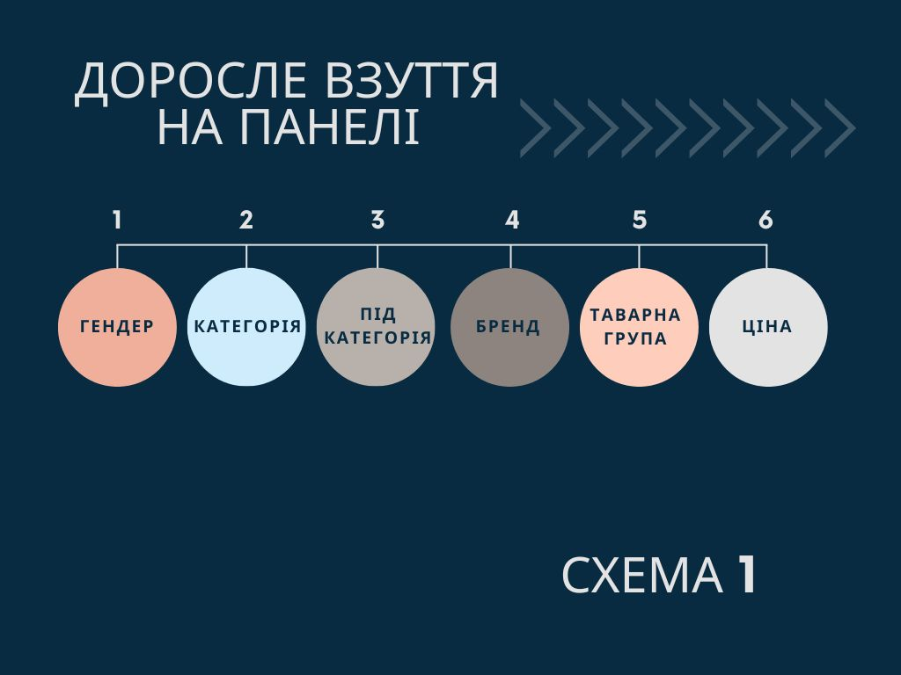

Презентація взуття на панелі
Презентація зразків дорослого взуття здійснюється послідовно за пріорітетами, відображеними у Схемі 1. Наприклад: Жіноче взуття (1) для Активного відпочинку (2) поділяеться спочатку на підкатегорії (3), всередені яких діляться на бренди (4), всередені кожного бренда розставляється згідно з товарними групами (5) і останнім кроком товарні групи виставляємо згідно ціни(6).
Послідовність товарних груп
Спорт
AW:
Чоботи - Високі кеди - Кеди - Слипони - Кросівки - Високі кросівки
SS:
Сандалі - Кеди - Високі кеди - Сліпони - Кросівки - Високі кросівки
Активний відпочинок
AW:
Чоботи - Черевики - Напівчеревики - Сліпони
SS:
Сандалі - Сліпони - Напівчеревики - Черевики
Презентація взуття на гандолах
Взуття розміщується на гандолах послідовно по пріорітетам в напрямку від границі категорії, від прохода до панелі змійкою (1). Послідовність брендів визначається згідно з цінового сегмента та відображається у планограмі. Послідовність підкатегорій на гондолах така сама як на панелях.